Matsumoto: вечерняя прогулка
Nakamachi-dori (中町通り) - улица купеческих амбаров
Улица между станцией и замком. В эпоху Meiji здесь жили торговцы: оптовики масла, сакэ-пивовары. После большого пожара эпохи Meiji они перестроились в амбары-кура - толстостенные огнестойкие склады, и их здесь сохранилось больше двадцати (Mapple). Узнаёшь по белым стенам в чёрную диагональную сетку из плитки (namako-kabe). Дома эпох Эдо-Тайсё, то есть XVII - начало XX века (go-nagano). Иди с запада на восток, не спеша.


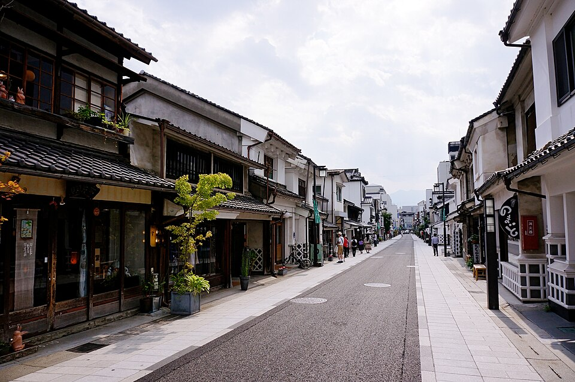


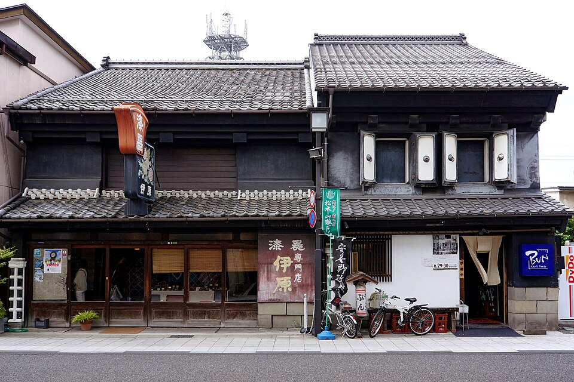


Kura-Shikku-kan (中町・蔵シック館)
Самый большой амбар улицы: сакэ-амбар эпохи Meiji, переделанный в общественный центр с выставками (Travelko). Внутри огромные тёмные балки (на фото). Чайная при нём работает днём, примерно 10:00-17:00 (yukoyuko), так что вечером только снаружи.

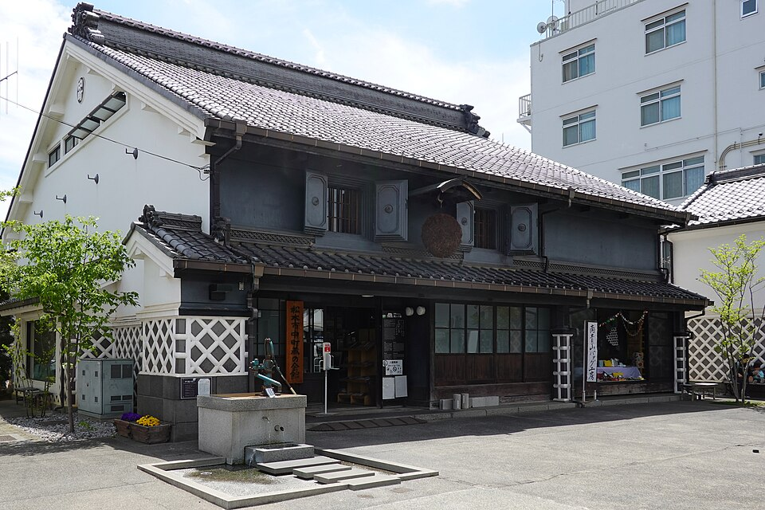


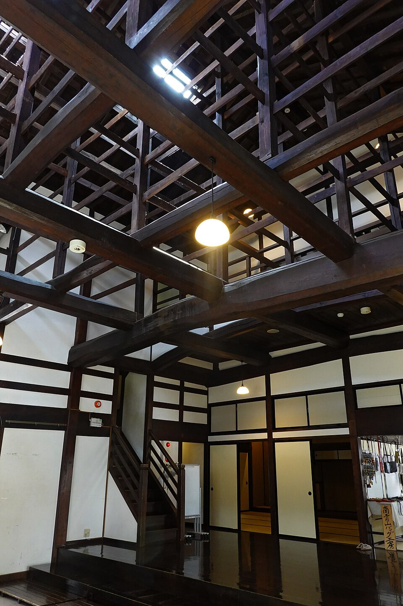

Речка Metoba (女鳥羽川)
Неширокая горная речка с каменными берегами, течёт через центр. В конце Nakamachi переходишь по мосту на северный берег - там начинается Nawate. Раньше здесь была граница замкового города: с одной стороны речка, с другой ров замка.

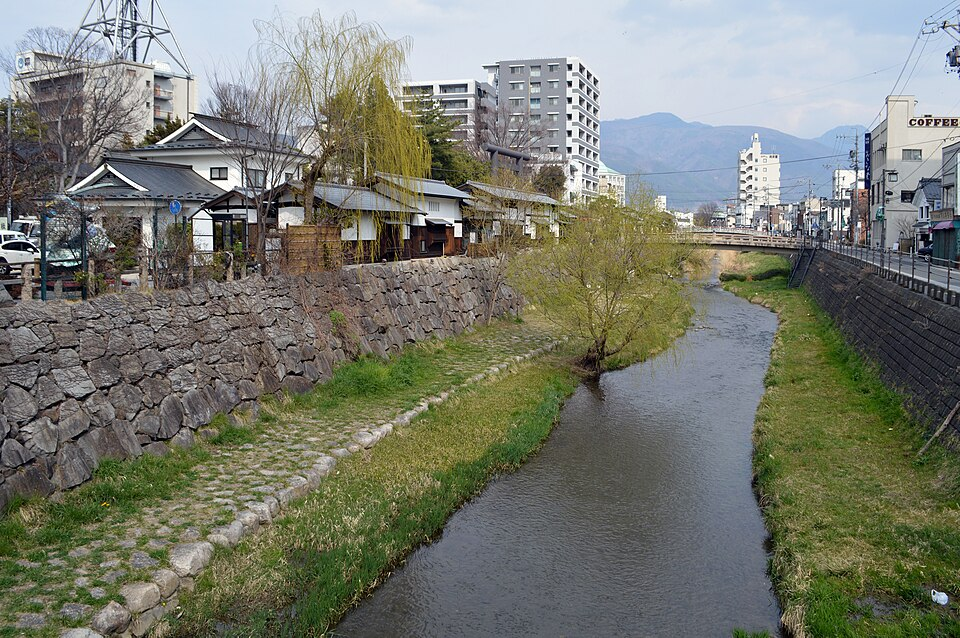


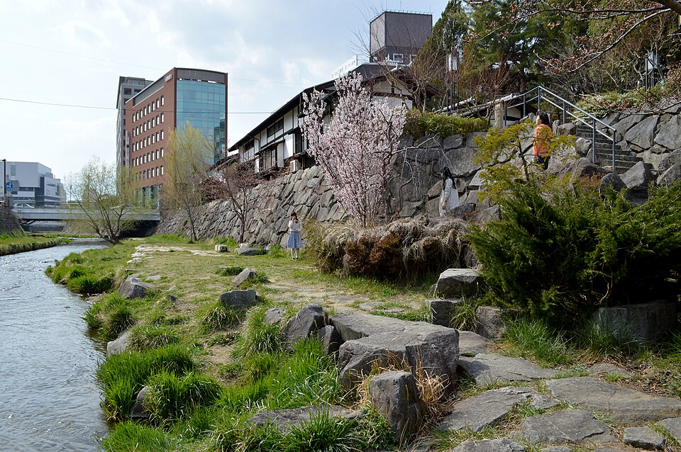

Nawate-dori (縄手通り) - «улица лягушек»
В эпоху Эдо это была насыпь между крепостным рвом и речкой Metoba, отсюда название. Улица выросла как дорога к святилищу Yohashira (с 1879 года). Сейчас это пешеходный ряд лавок вдоль реки. Лягушки - в память о лягушках kajika, которые когда-то жили в Metoba: статуи по всей улице, лягушка-самурай Gama-zamurai и маленькое святилище Kaeru Daimyojin посередине (go-nagano).


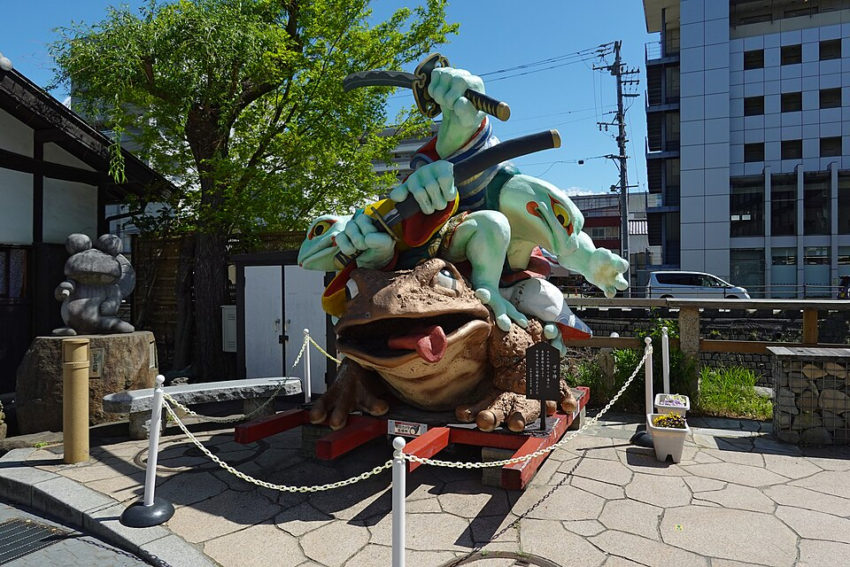


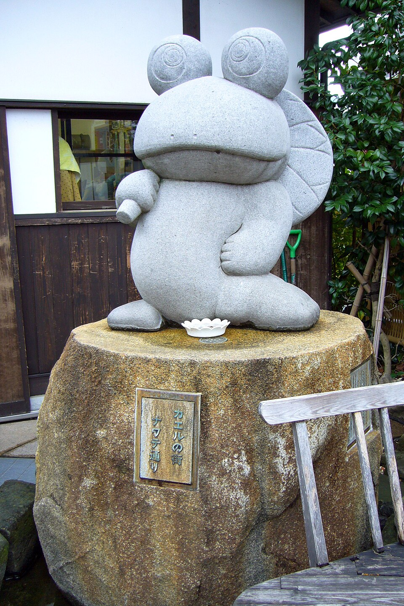


Святилище Yohashira (四柱神社)
Синтоистское святилище четырёх главных богов (отсюда «Yohashira» - «четыре столпа»); считается, что приносит удачу в отношениях. Построено в эпоху Meiji, по одному источнику - в 1879 году. Двор открыт и вечером тихий, ворота-тории выходят прямо на речку.

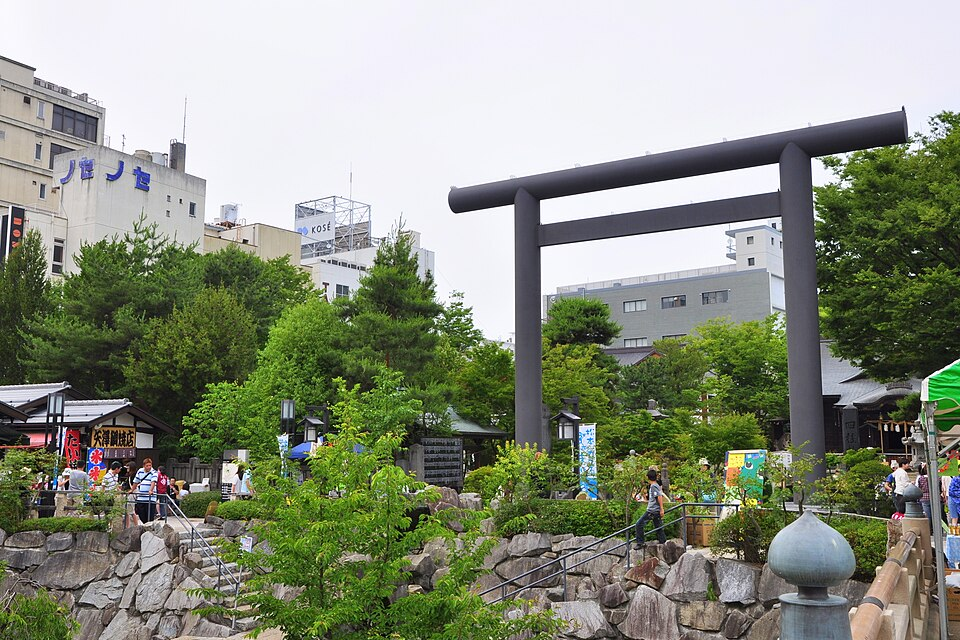


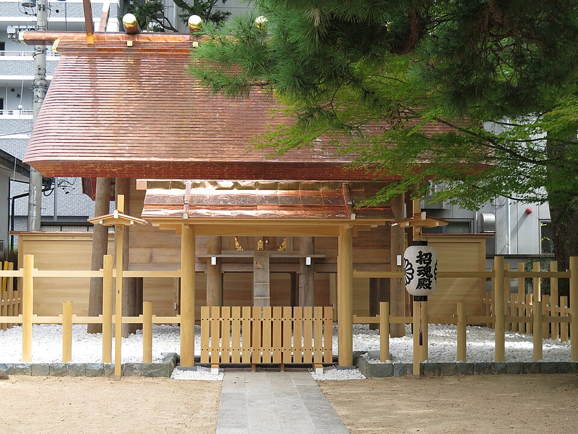


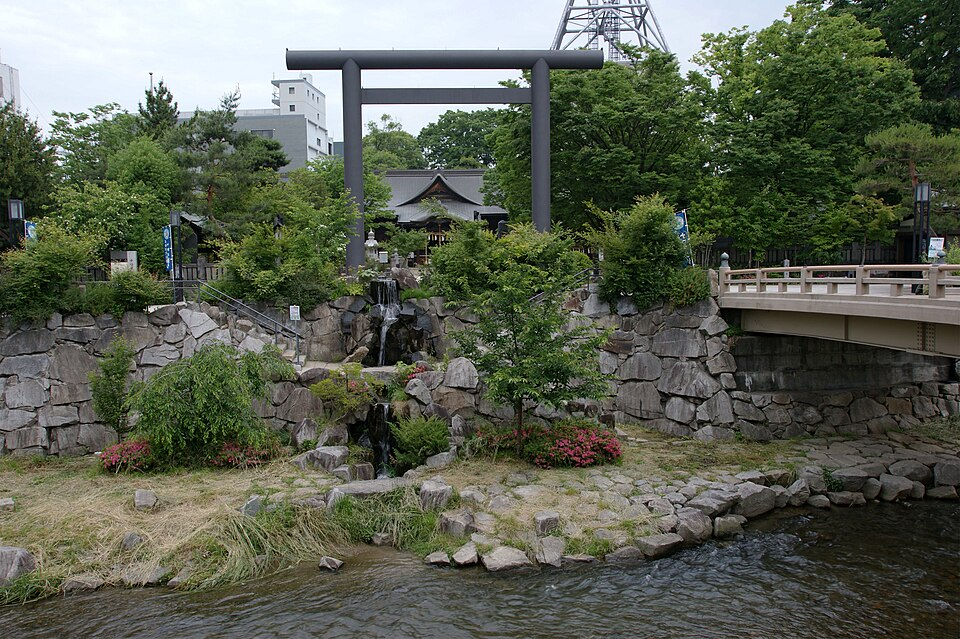

Обратно в отель через мост Chitose
Замок отсюда в 5 минутах к северу - туда завтра в 8:30, когда откроется. В Dormy Inn горячий источник 梓の湯 с купальней под открытым небом и сауной, работает всю ночь. Вечером бесплатная лапша yonaki soba; во сколько её дают именно здесь, спроси на ресепшене (в других Dormy Inn 21:30-23:00).
Где поужинать рядом
Местное: соба, басаси (сырая конина), sanzokuyaki (жареная курица). Часы - по японским агрегаторам, не официальные.